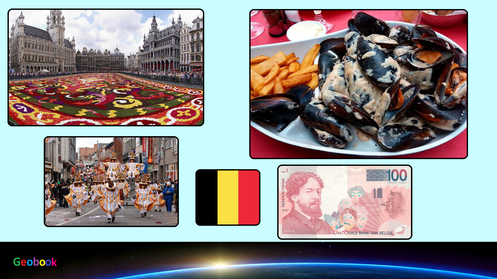

____
Флаг
Флаг Бельгии представляет собой прямоугольное полотнище с соотношением сторон 13:15, состоящее из трёх равновеликих вертикальных полос — чёрной, жёлтой и красной. Эти цвета традиционно были цветами Брабантского герцогства. Форма основана на форме флага Франции, хотя происхождение пропорций неизвестно.

Герб
Герб Бельгии в современном виде был утверждён королевским декретом от 17 марта 1837 года, в котором были описаны большая и малая форма герба. Согласно статье 193 (изначально 125) Конституции Бельгии, «бельгийский народ принимает красный, золотой и чёрный цвета, и в качестве государственного герба — бельгийского льва с девизом Единство даёт силу.»

____
